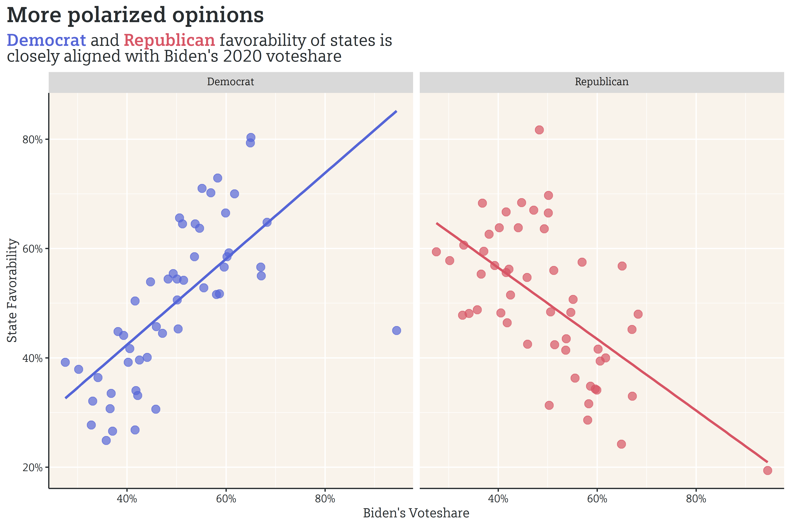

The past few weeks have been a bit lite (read::absent) in terms of posting updates. When not taking the machine learning course, I’ve been spending quite a bit of time working on building out a database of demographic data (from 1980 to 2019). The goal is to be able to build this database out once, then reference it repeatedly for future projects. If you’re so inclined, you can read my unedited ad-hoc thoughts while working on the database here. There’s lots of code interspersed with prose, so it’s a bit of a slog to read through, but gives a really detailed account of how I worked through the different problems that arose.
That being said, I did have a bit of time to squeeze in a quick chart. YouGov recently conducted a poll on each state’s favorability rating according to Democrats and Republicans. Not surprisingly, state favorability is closely aligned with Biden’s voteshare in November.

I’ll keep this short and sweet. I may continue to write sparsely over the next month or so, due to a few trips (now that I have the COVID vaccine), but will continue to work on the database in the background.
As always, you can find my work on Github.